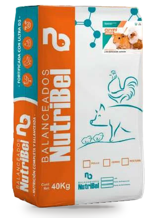

Línea Granja
Alimento para cuyes
Inicio, crecimiento, engorde y reproductoras: alimento medicado con vitamina C y la fibra que el cuy necesita, para crianzas familiares y comerciales.

Programa de alimentación
4 fórmulas ordenadas por etapa. Toca un alimento para ver su análisis garantizado.
01
Inicio
Gazapos después del destete.
02
Crecimiento
Desarrollo hasta la etapa de engorde.
03
Engorde
Etapa final, hasta la saca.
04
Reproducción
Hembras reproductoras.
Preguntas sobre cuyes
¿El balanceado reemplaza al forraje?
En la crianza mixta el balanceado complementa el forraje verde. Tu asesor te indica la proporción según tu sistema de crianza.
¿Crías cuyes?
Te ayudamos a elegir la fórmula y a calcular cuántos sacos necesitas para tu lote.